Gagner
Rangebound
Étape 1 : Sélection de votre produit
→ Naviguez vers l'onglet Protocole et cliquez sur Gagner.
→ Choisissez le produit structuré Rangebound.
→ Sélectionnez l'actif sous-jacent que vous préférez—BTC ou ETH.
→ Sélectionnez l'une des meilleures transactions recommandées pour l'actif choisi.
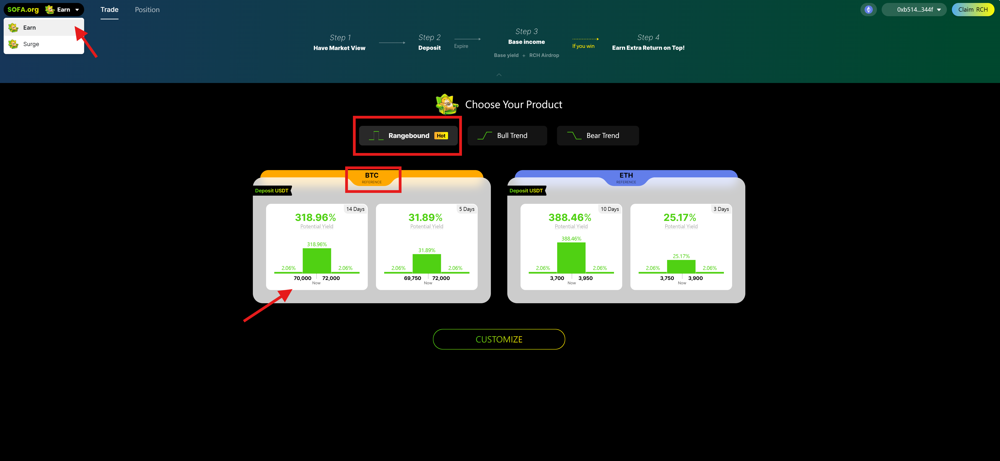
Étape 2 : Vérification des détails de la transaction
→ Une fenêtre contextuelle affichera toutes les informations pertinentes sur la transaction, y compris la date de règlement, les barrières inférieure et supérieure, le rendement de base, le rendement de base + RCH, le rendement potentiel et les résultats potentiels dans divers scénarios.
→ Entrez le montant souhaité en USDT dans la case Montant du dépôt
→ cliquez sur Déposer
→ votre portefeuille affichera une fenêtre de confirmation.
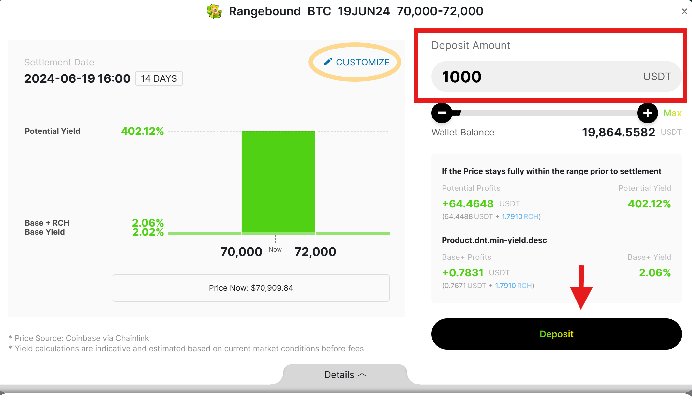
Si vous souhaitez personnaliser des détails, passez à l'étape 3.
Étape 3 : Personnalisation de votre transaction
→ Cliquez sur l'icône Personnaliser soit depuis la page d'accueil Gagner, soit depuis la page des détails du produit mentionnée à l'étape 2.
→ Sur la page de personnalisation, vous pouvez modifier les paramètres de votre transaction. Sélectionnez vos paramètres souhaités :
Rendement de base
Date d'expiration (c'est-à-dire, date de règlement)
Prix de la barrière inférieure (B1) et prix de la barrière supérieure (B2)
Montant du dépôt
et cliquez sur Demander un devis.
→ Après avoir défini les paramètres, cliquez sur Dépôt pour continuer.
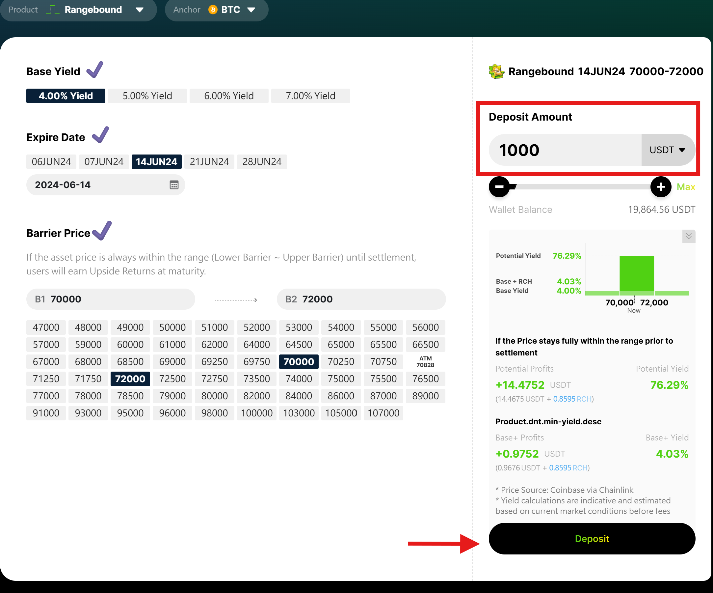
Étape 4 : Confirmation de votre trade
Lorsque vous y êtes invité, interagissez avec les fenêtres suivantes pour la confirmation du trade :
- Demande de signature : Une fenêtre de demande de signature apparaîtra en premier. Cliquez sur Signer pour autoriser.
- Exécution du trade : Après avoir signé, une fenêtre de confirmation apparaîtra. Cliquez sur Confirmer pour finaliser le trade.
✅ Assurez-vous que les deux actions sont complètes pour réaliser votre trade avec succès.
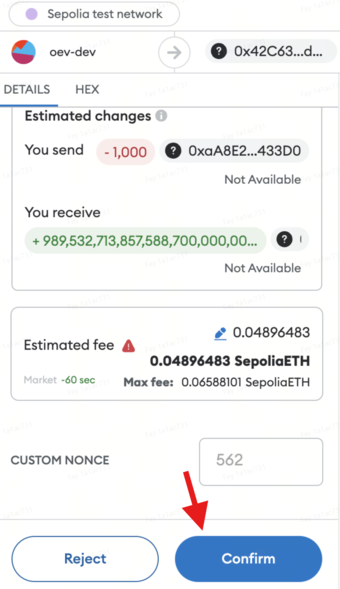
Étape 5 : Exécution du trade
→ Félicitations ! Votre transaction a été soumise avec succès sur la chaîne. ✅
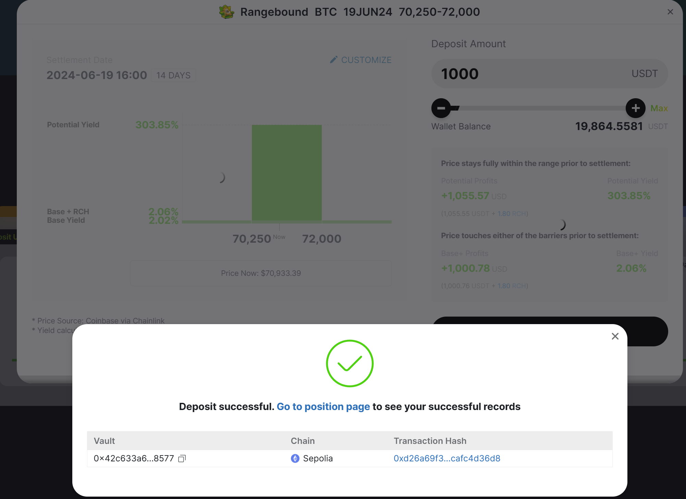
Étape 6 : Suivi de votre position
→ Accédez à l'onglet Position pour voir les détails de votre trade après l'exécution du trade.
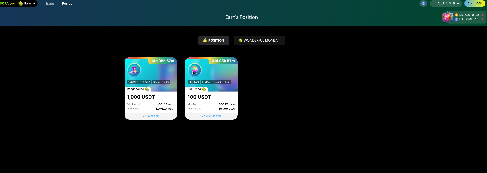
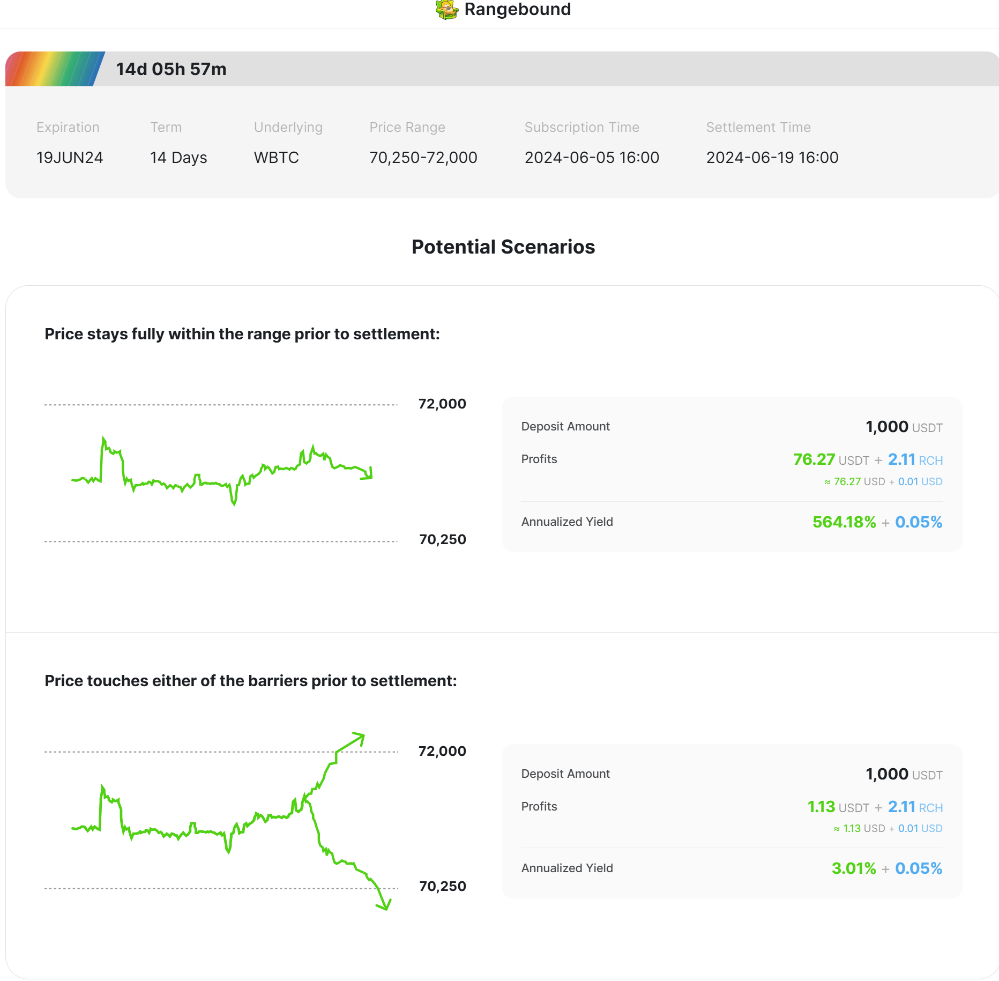
Étape 7 : Réclamer vos paiements
→ À la date de règlement (d'expiration), allez à l'onglet Position, ouvrez votre ticket de trade et cliquez sur Réclamer pour recevoir vos paiements.
Remarque :
Pour les produits Earn (sécurisés), tous les montants déposés seront mis en jeu dans le protocole Aave pour générer des rendements passifs. De plus, une partie des rendements Aave sera conservée en tant que Rendement de Base, et la partie restante sera déployée dans des stratégies d'options pour générer des rendements potentiels à la hausse.
Tendance Haussière
Étape 1 : Sélectionner votre produit
→ Naviguez vers l'onglet Protocole et cliquez sur Gagner.
→ Choisissez le produit structuré Tendance Haussière.
→ Sélectionnez l'actif sous-jacent que vous préférez—BTC ou ETH.
→ Sélectionnez l'une des Meilleures Transactions recommandées pour l'actif choisi.

Étape 2 : Examiner les détails de la transaction
→ Une fenêtre pop-up affichera toutes les informations pertinentes sur la transaction, y compris la Date de Règlement, les Seuils Inférieur et Supérieur, le Rendement de Base, le Rendement de Base + RCH, le Rendement Potentiel et les résultats potentiels dans divers scénarios.
→ Entrez le montant souhaité en USDT dans la case Montant du Dépôt → cliquez sur Dépôt → votre portefeuille affichera une fenêtre de confirmation.
Si vous souhaitez personnaliser des détails, passez à l'étape 3.
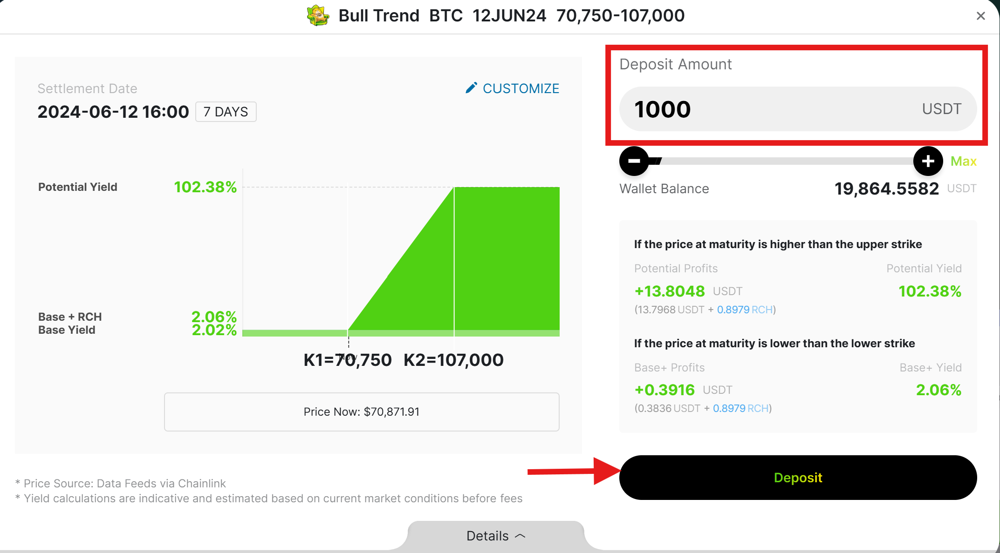
Étape 3 : Personnaliser votre transaction
→ Cliquez sur l'icône Personnaliser soit depuis la page d'accueil Gagner, soit depuis la page des détails du produit mentionnée à l'étape 2.
→ Sur la page de personnalisation, vous pouvez modifier les paramètres de votre transaction. Sélectionnez vos paramètres souhaités : Rendement de Base Date d'Expiration (c'est-à-dire, Date de Règlement) Prix d'Exercice Inférieur (K1) et Prix d'Exercice Supérieur (K2) Montant du Dépôt
et cliquez sur Demander un Devis.
→ Après avoir défini les paramètres, cliquez sur Dépôt pour continuer.
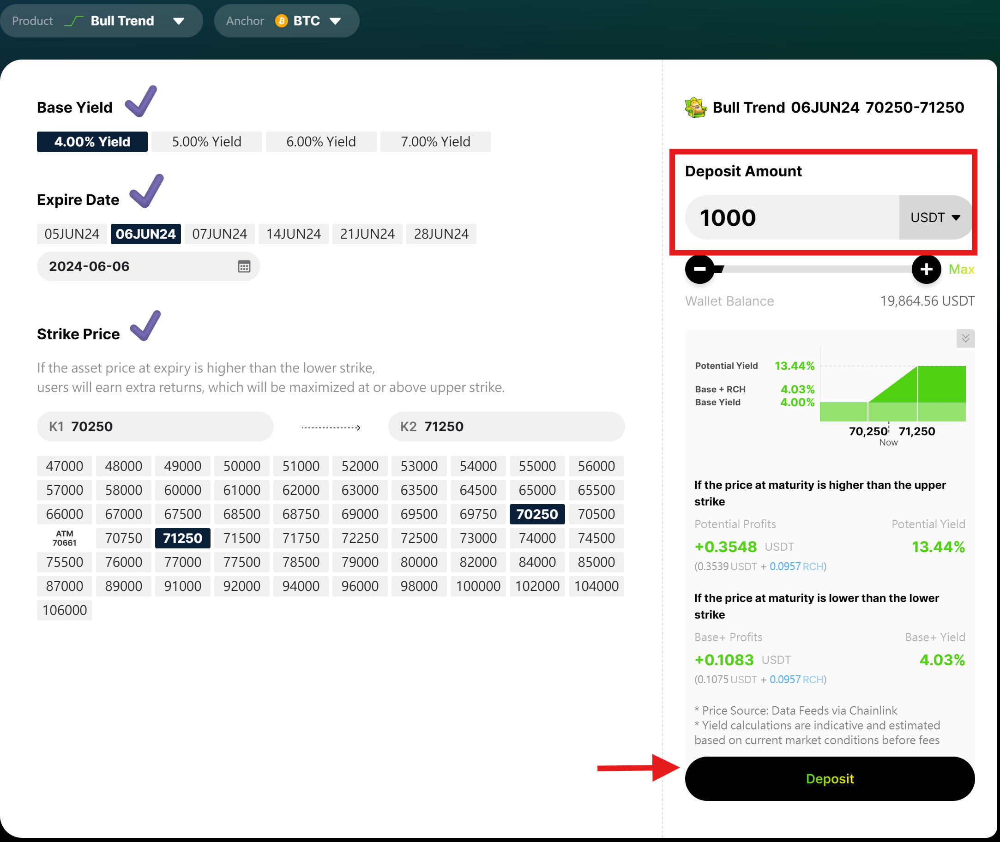
Étape 4 : Confirmation de votre trade
Lorsque vous y êtes invité, interagissez avec les fenêtres suivantes pour la confirmation du trade :
- Demande de signature : Une fenêtre de demande de signature apparaîtra en premier. Cliquez sur Signer pour autoriser.
- Exécution du trade : Après avoir signé, une fenêtre de confirmation apparaîtra. Cliquez sur Confirmer pour finaliser le trade.
✅ Assurez-vous que les deux actions sont complétées pour réaliser votre trade avec succès.
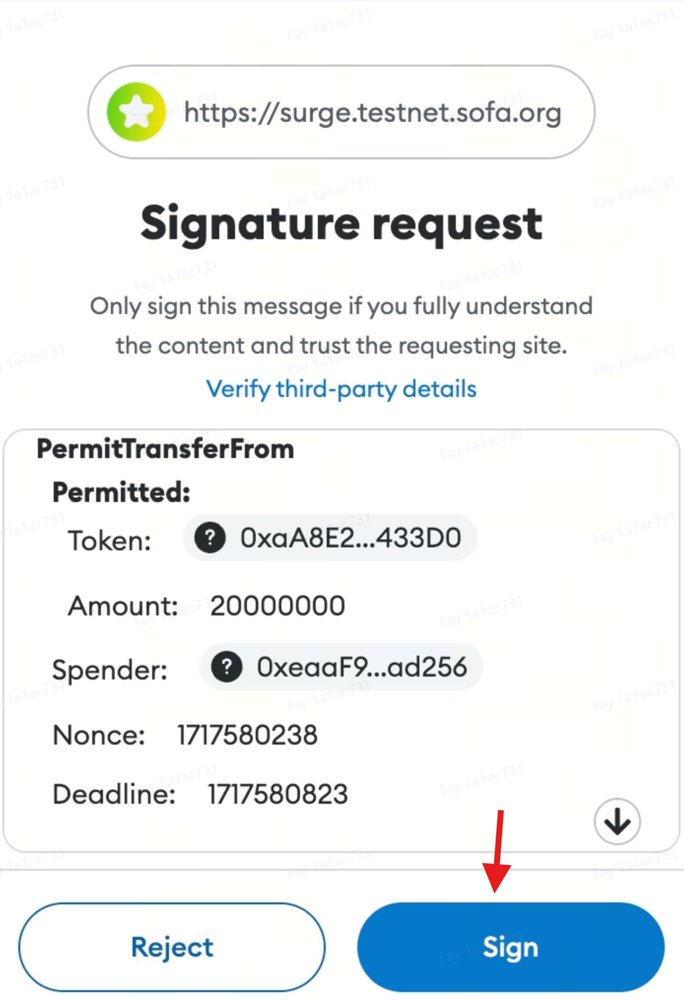
Étape 5 : Exécution du trade
→ Félicitations ! Votre transaction a été soumise avec succès sur la chaîne. ✅
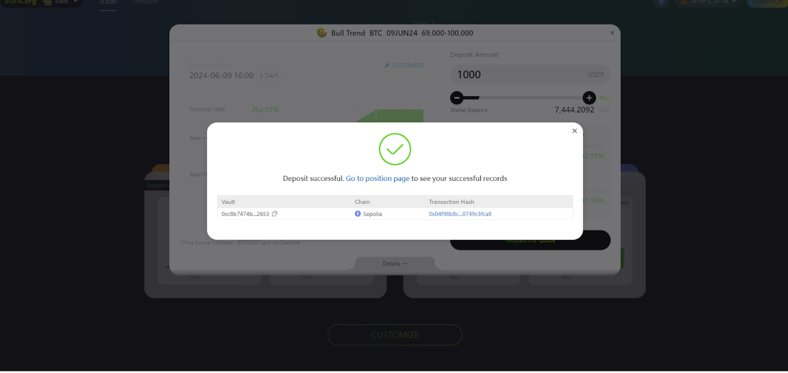
Étape 6 : Suivi de votre position
→ Accédez à l'onglet Position pour voir les détails de votre trade après l'exécution du trade.
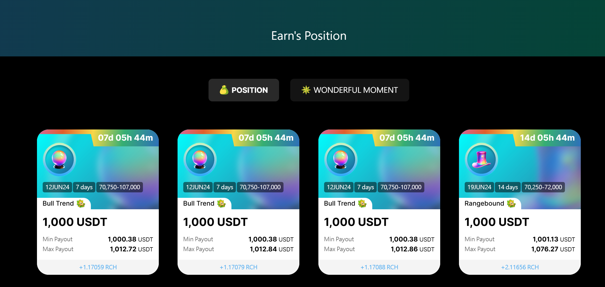

Étape 7 : Réclamation de vos paiements
→ À la date de règlement (expiration), allez à l'onglet Position, ouvrez votre ticket de trade et cliquez sur Réclamer pour recevoir vos paiements.
Remarque :
Pour les produits Earn (sécurisés), tous les montants déposés seront mis en jeu dans le protocole Aave pour générer des rendements passifs. De plus, une partie des rendements d'Aave sera conservée en tant que Rendement de Base, et la partie restante sera déployée dans des stratégies d'options pour générer des rendements potentiels à la hausse.
Tendance Baissière
Suit les mêmes étapes que celles décrites pour le produit Tendance Haussière.